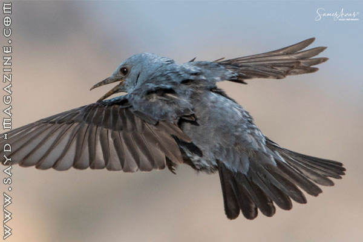
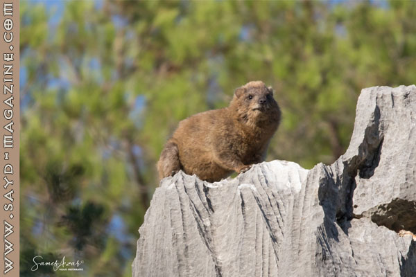
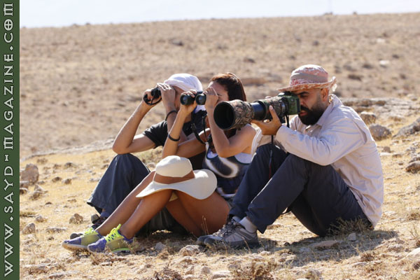
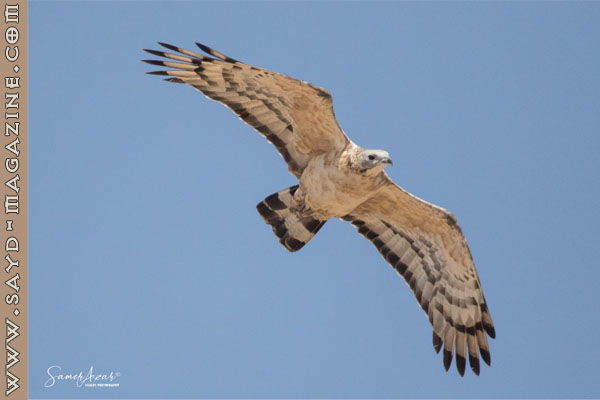
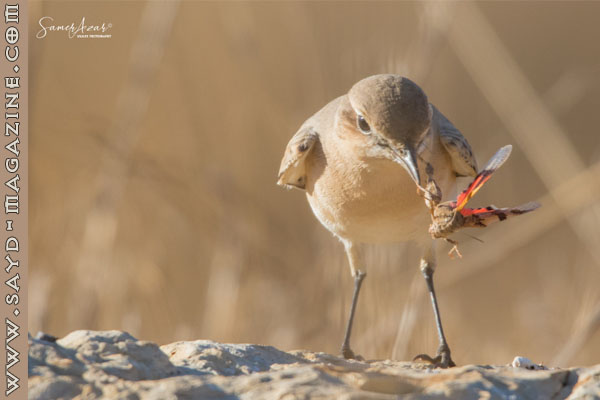
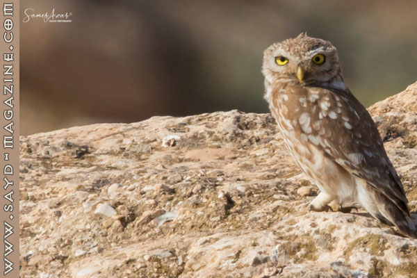
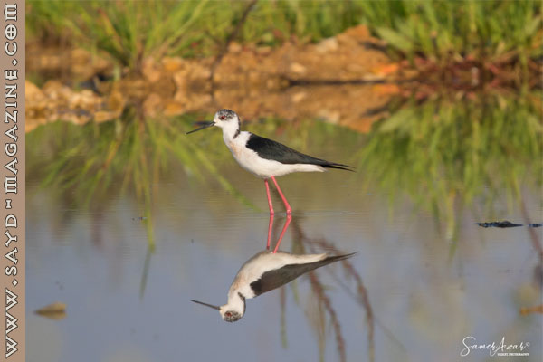
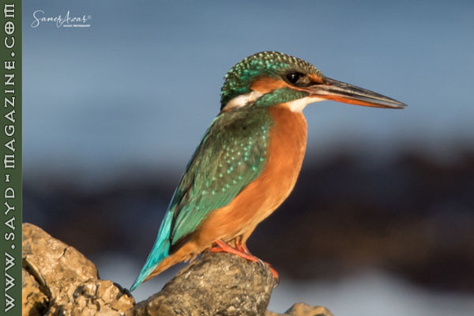
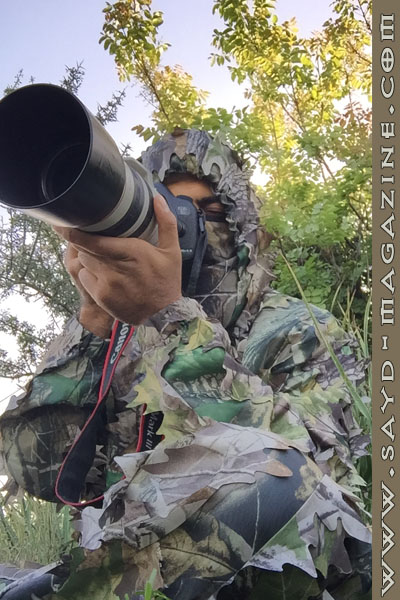

من مصادفة إلى توّرُط إلى احتراف.. كانت رحلة الصياد المسؤول والمصوّر المبدع سامر عازار، الذي نقلته مصادفة رؤيته صورة لعش طائر قرقف بنديولين (EURASIAN PENDULINE TIT)، كان قد نشرها فؤاد عيتاني (مدير قسم الصيد والتصوير البرّي في مجلة صيد) في صفحته على وسائل التواصل الإجتماعي، فتواصل معه ليعرف أين التقطها.. فأخبره. وتورط برحلة تصوير برّي مع فؤاد كانت كافية لترميه في أحضان هواية التصوير البرّي ومراقبة الطيور "bird watching" ليصبح محترفًا، وينشئ أول مجموعة في لبنان Lebanon Birdwatching Tours تعمل كدليل لمحبي مراقبة الطيور، وتنظّم رحلات لمشاهدتها. ومؤخرًا فاز سامر بالمركز الثاني بمسابقة تصوير برّي أجرتها مجموعة "Aqaba Bird Observatory" (مرصد طيور العقبة) والتي شارك فيها أكثر من 60 مصور عربي من معظم الدول العربية.

قال في المقابلة:- أُحّب الطبيعة والتصوير، ودائمًا ما كنتُ ألتقط صورًا للمناظر الطبيعية الخلابة خلال رحلات الصيد أو المشي في البر، لم أكن أتخيل يومًا أن أُصوّر الطيور، كنت أعتقد أنها فقط للصيد.
- علّمتني هواية مراقبة الطيور وتصوريها تقدير الطير والطبيعة وأهميتهما في حياتنا واستمراريتها.
- من خلال التعرف على الطيور والقراءة عنها. تعلّمت أكثر الصبر والهدوء، وهما من أبرز صفات الصياد المحترف ومصوّر الحياة البرّية.
- علينا ان نتقبل فكرة أن الأشياء ليست دائمًا تحت سيطرتنا وغالبًا ما نواجه عَقَبات أو خيبات أملٍ في رحلاتنا، (طقس سيء- عدم إيجاد الطير المنشود أو الأسوء إيجاده وعدم التمكن من التقاط صورة جيدة له...) بالرغم من كل التخطيط المسبق.
- تعلمت الصيد من الصغر كأغلب الأشخاص في لبنان، كنت أُرافق والدي وأشقائي في رحلاتهم، إلى أن أصبحتُ قادرًا على الذهاب بمفردي، لم أكن أعرف القانون وأصول الصيد المستدام في البدء، هذا المفهوم كان غريبًا وبعيدًا عن معظم ممارسي هذه الهواية ممن حولي، ومع الوقت بدأت بالتعلّم وتصحيح مساري. - . التصوير كان له الفضل الأكبر في تحوّلي إلى صيّاد مسؤول ومصوّر حياة برّية، وبسببه أصبحت أغوص في البحث أكثرعن كل ما يتعلق بالطيور والحيوانات، وما زلت وسأبقى .

- التعرف على أشخاص صيادين محترفين ومصورين مميزين نادرين أمثال فؤاد عيتاني، ماهر أسطا، ناصيف إفرام وماهر روحانا، كان له الأثر الكبير في زيادة الوعي والمعرفة عندي بموضوع الصيد والطيور.- صيد البندقية له موسم محدد وأنواع طيور محددة مسموح صيدها، في صيد العدسة نستطيع تصوير كل ما "يملك ريش" في كل الأوقات والأيام.
- حين تصطاد طائرًا في البندقية، لا يمكنك مشاركته مع الآخرين، أما في صيد العدسة فيكمن التحدي من خلال المنافسة الإيجابية في التقاط الصورة الأروع.
- هواية الصيد بالبندقية والصيد بالعدسة يتشبهان في عناصر التحدي. فالتحدي الجسدي يتمثل من خلال القدرة على اللحاق بالطريدة أوالطير أينما كانا، وأنت بكامل عدّتك وعتادك. والتحدي النفسي الذي يتمثل بالقدرة على تحمل النتائج السلبية كالرجوع خالي الوفاض. والتحدي الرياضي الذي يحترم تكافؤ الفرص من خلال عدم استعمال أي أسلوب غير شرعي للتفوق على الطريدة من خلال استدراجها عبر أجهزة مناداة الطيور أو صيد الليل أو الصيد على الشباك.. إلخ. وتكمن المهارة في استعمال التمويه والهدوء والصبر للإقتراب من الطريدة أو الطير.

- كل هواية لها قوانين وضوابط أخلاقية للممارستها، ففي الصيد ممنوع استعمال المكنات، ممنوع الصيد بالليل، ممنوع الصيد بالربيع وخارج الموسم، وفي صيد الكاميرا، ممنوع إزعاج الطيور والاقتراب منها كثيراً خاصةً في موسم التزاوج، ممنوع استعمال الشبك أو الشراك للإمساك بالطيور وتصويرها عن قرب، ممنوع تصوير أعشاش الطيور.- هناك لذّة لا يعرفها من لم يمارس إحدى هاتين الهوايتين، فعندما تنجح وتحقق الهدف من رحلتك، وعندما تكون برفقة أشخاص يشاركونك نفس الاهتمام، وعندما تتعلم التحكم بتصرفاتك، تعيش هذه اللذّة.
- التواجد في الطبيعة، يعتبر علاج بحد ذاته.
- بعد ممارسة هذه الهواية لأربعة سنوات، والتعمق بها أكثر ومشاركتها عبر صفحات التواصل الإجتماعي، لاحظت أن هناك الكثير من الناس لا يملكون معلومات عن أنواع الطيور الموجودة في لبنان (تمامًا كما حصل معي)، وقسمًا كبيرًا كان دائماً يسأل عن أماكن تواجد هذه الطيور وكيفية الإنضمام إلى رحلاتنا، من هنا بدأت فكرة أن أنشئ مجموعة تعمل كدليل لمحبي مراقبة الطيور، بدأت بالبحث ولم أجد أي شيء مماثل في لبنان، فزاد اقتناعي بالفكرة، وبتأييد من بعض الأصدقاء نفَّذتها.

- الخدمات المقدمة تبدأ من لحظة الوصول إلى لبنان ولغاية المغادرة للأجانب. نؤمن حجز الفنادق، المواصلات، الدخول إلى المحميات، مرافقة خلال النهار، تنظيم الرحلات حسب رغبة الزبون على جميع الأراضي اللبنانية.- هناك أكثر من ذكرى: كانت بمثابة حدث لي من خلال توثيق بعض الحالات النادرة، منها: أول تكاثر لطائر الغطاس المتوج الكبير (GREAT CRESTED GREBE ) في لبنان، مع ماهر أسطا وماهر روحانا وتسجيل مرور "حوام النحل الآسيوي المتوج" للمرة الثالثة فوق لبنان في جرد حراجل- كسروان. وتصوير بعض الطيور المهددة بالانقراض "كالرخمة المصرية" في منطقة لالا- البقاع وحالات - جبيل، و"النعار السوري" في عنجر والأرز. كما لا أستطيع نسيان مشاهدة أي طائر للمرة الأولى.
- معظم الأوقات تكون رحلاتنا مخطّطة، إذ نقوم باختيار المكان الأنسب للذهاب حسب الوقت والطقس والطيور التي نرغب بمشاهدتها، ولكن بعض الرحلات تكون عفوية وليدة اللحظة وحسب المزاج.

- أحيانًا أذهب بمفردي لتنقية ذهني والابتعاد عن ضغوطات الحياة اليومية والمشاكل.- الكاميرا بالنسبة لي هي التحدي الأكبر والأهم من البندقية، لأنني أشارك ما قنصته بالعدسة مع الآخرين، وأفهم عالم الطيور وأنواعها أكثر وأتمتع بجمالها.
- موقع لبنان على ثاني أهم ممر لهجرة الطيور في العالم يعطينا فرصة لمشاهدتها مرتين في السنة، الخريف والربيع، في هاتين الفترتين نستطيع أن نشاهد آلاف الطيور تمر فوق وعبر لبنان.
- أفضل وقت لمشاهدة هجرة الخريف بين آب وأيلول ثم تنخفض الوتيرة. أما هجرة الربيع تبلغ ذروتها بين نيسان وأيار.
- من حسنات هواية مراقبة الطيور وتصويرها، أنها ليست محدودة بوقت معين، بل نستطيع ممارستها كل أيام السنة.
- طبيعة لبنان الجغرافية تعطي البقاع الأفضلية في التنوع والأعداد الممكن مشاهدتها ولكن بالإجمال جميع المناطق لها حصة من الهجرة والطيور.

- هذه السنة اكتشفت أن منزلي الواقع في منطقة جبيل قرب البحر لا يقل أهمية عن أي نقطة مراقبة، فقمت بتوثيق الرخمة المصرية وصقر إلينور النادرين بالإضافة إلى أعداد كبيرة من الطيور الجارحة والكرك، البجع، اللقلق، الورور، السنونو، الخطف وغيرهم خلال مرورهم.- مراقبة الطيور مفهوم جديد بالنسبة لأغلبية الشعب اللبناني وحتى الدولة والسلطات الأمنية، في بعض الأحيان نواجه صعوبة في شرح ما نفعل والهدف منه.
- هناك أيضاً المشاكل التي نواجهها مع "الفرقعجية" أحيانًا، معظمهم يعتقد أننا نلتقط صورًا لهم وهم يخالفون القوانين، وبالتالي يحاولون ترهيبنا لمغادرة المنطقة.
- أعرف عددًا من الأشخاص الذين تخلوا عن الصيد لصالح التصوير، ولكن ليس لأن التصوير أفضل كهواية، إنما بسبب طمع وسوء ممارسة الصيد من قبل البعض الذين أعطوا صورة وسمعة سيئة للصياد اللبناني.

- بالنسبة لي، لم ولن أتوقف عن الصيد، سأحاول قدر استطاعتي تصحيح الصورة عبر توعية المخالفين وإرشادهم إلى الدرب السليم، تمامًا كما حدث معي.- الصيد والتصوير يكملان بعضهما البعض، الهدف منهما التمتع بالطبيعة، وقضاء الوقت فيها، كل هواية منهما لها طعم خاص لا تسطيع الثانية تعويضه.
- هواية مراقبة الطيور تستطيع تأمين مداخيل كبيرة للبنان في حال عرفنا كيف نستفيد منها، فمثلاً في الولايات المتحدة الأميركية مراقبو الحياة البرية يساهمون بما مجموعه 80 مليار دولار تقريبًا في الاقتصاد الأميركي، يستفيد منها أكثر من قطاع بطريقة مباشرة أو غير مباشرة.

